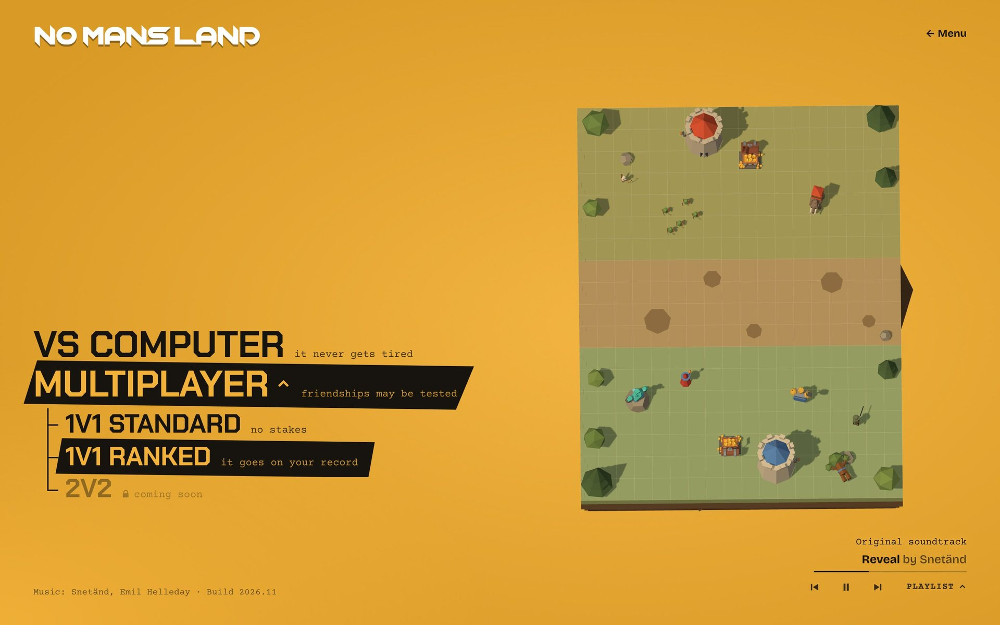
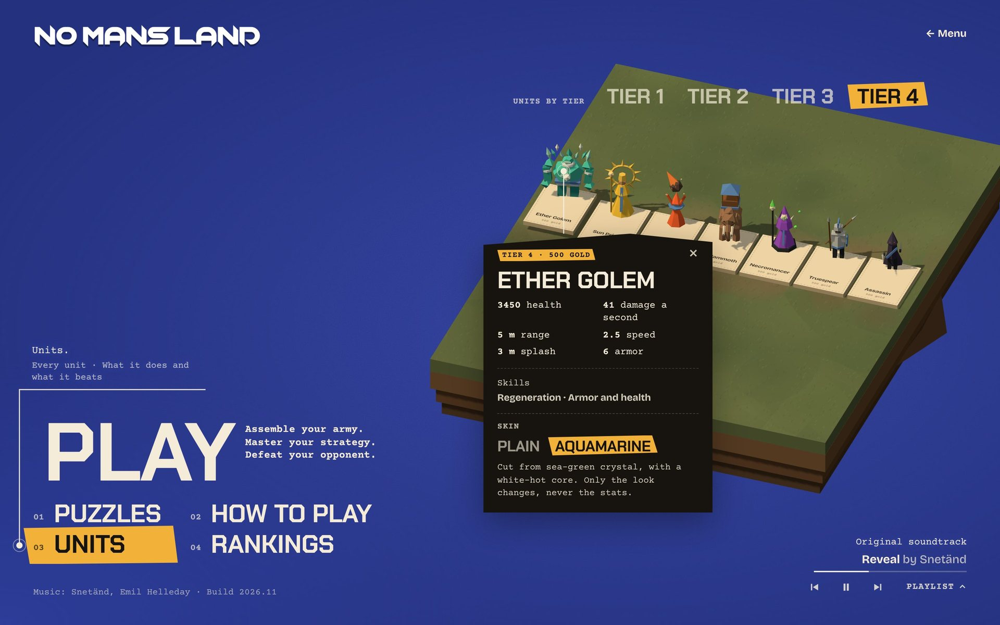

Inlägget in #visa-vad-du-gjort
Four screens in the order a new player meets them, so people can comment on the whole path. The numbered questions make answers easy to sort.
Preview
# visa-vad-du-gjort
Snetänd



